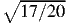

The Exercise:
Our objective is to calibrate a sensor so that we can use the calibration to estimate the value x of a
measurand from the output of the sensor M. We have available a calibrator that produces values of a
measurand with very small random error and no systematic error, so its contribution to error in the
calibration can be neglected. Our sensor, on the other hand, makes individual measurements with a
rather large random error, characterized by the precision σM=1.5. The goal of calibration is
to minimize systematic error in measurements using this sensor. We decide to make N=20
measurements equally spaced over a measurand interval {x1–x2), and as a result we get N
measurements {Mi} that correspond to {xi}. Results are as listed in the following table and shown in
Fig. 1:
|
|
|
|
|
|
|
|
| x | M | x | M | x | M | x | M |
|
|
|
|
|
|
|
|
|
|
|
|
|
|
|
|
| 1 | 8.9783 | 6 | 23.8731 | 11 | 49.9256 | 16 | 79.8253 |
|
|
|
|
|
|
|
|
| 2 | 12.4642 | 7 | 31.8451 | 12 | 58.126 | 17 | 83.5705 |
|
|
|
|
|
|
|
|
| 3 | 14.736 | 8 | 34.9857 | 13 | 61.4559 | 18 | 90.9026 |
|
|
|
|
|
|
|
|
| 4 | 17.9198 | 9 | 39.6738 | 14 | 67.3803 | 19 | 99.7811 |
|
|
|
|
|
|
|
|
| 5 | 23.4088 | 10 | 43.621 | 15 | 71.3742 | 20 | 105.4481 |
|
|
|
|
|
|
|
|
| |
Using these data, find a representation of this calibration in the form x = f(M), where f() can be a
polynomial or other function, so that the output M from this sensor can be used to estimate the measurand
x, under static conditions.
Your Answer:
Your exercise is to enter two answers:
- If the sensor output is 55, what should your estimate of the measurand be?
- How would you represent this calibration as a function of the form x = f(M)? Enter your
formula; for example “200 + 5 * M” (without the quote marks), and click the “show plot”
button to see your calibration plotted and evaluated. You can enter powers of M using, e.g.,
M**2 or M^2. You can find a tool for performing basic linear-model fits to these calibration
data at this URL: https://williamcooper.shinyapps.io/CalibrationExercise. Or, use MatLab or
a similar package or your own calculations for fitting. Trial-and-error is instructive too.
Our Answer:
[enter and check yours first; you will learn more.]
[interactive version allows selection of order of polynomial and specification of number of measurements
like those tabulated to average before calculating the fit.]
Question 1: 11.96
Question 2: x = b0 +b1M +b2M2 with {b0, b1, b2} = {-0.962, 0.2770, -0.0007627}, as developed
below. For M=55, this leads to the answer to Question 1.
First we consider a linear fit. (That obviously won’t work very well because the transfer curve shown in
Fig. 1 does not have a constant slope, but this approach is still instructive.) A common error is to find the
regression fit giving M as a function of x, which for this case gives M = a1 +a2x with a1=-2.752 and
a2=5.1159. The resulting fit is shown in Fig. 2 as the orange line. However, if instead we determine the
regression fit giving x as a function of M, we get the result shown as the green line. The orange and green
lines are almost the same, because in this case the correlation coefficient is high (0.9934,
but the difference between the two regression lines increases as the correlation decreases.
Which should we use? We will use the calibration to determine estimates of the measurand
x corresponding to measurements M, so we want to minimize the error in x for a given M.
That is represented best by the second regression fit giving x as a function of M, the green
line.
The residual standard deviation of the calibration values for x, given M, from that regression line is
0.6967. That is not very good, and the deviations are systematic, so it is justified to try a higher-order fit.
Using a linear-model fit to determine coefficients for a relationship x = b1 +b2M +b3M2 leads
to coefficients -0.9624, 0.277 and -7.6267×10-4 and the fit shown in Fig. 3. Using these
coefficients leads to our answer for x given M = 55: 11.96. The residual standard deviation for the
new fit is 0.3266, so the improvement is significant. Studies of this sensor by other means
indicate that its precision is about 1.5 units in the measurement M, so with a representative slope
of about b2 the expected precision in estimates of the measurand x is expected to be about
0.4155, so this result is reasonably consistent with the expected precision in measurements. That
indicates that higher-order polynomial fits are probably not needed or justified. If a third-order
polynomial is used in the fit, the residual standard deviation reduces only to 0.2867, so inclusion of
that term does not give any significant improvement in the fit. (The decision regarding which
terms are justified is often made on the basis of an analysis of variance, which in this case
indicates that the addition of a cubic term to the equation does not lead to statistically significant
improvement.)
Several additional lessons can be learned from this calibration:
- An error in the final calibration arises from the precision of the sensor. The calibration
points were generated from a known polynomial, and the differences between the result
of calibration and that assumed polynomial have standard deviation 0.1205 and so will
introduce an error of this magnitude when the calibration is used. Furthermore, although this
error arises from random errors in the calibration, they become systematic errors when that
calibration is used and cannot be reduced by repeated measurements. This is an important
motivation for getting the calibration to have minimal error.
- Did you interpolate between calibration points to estimate the value of x corresponding to
M = 55, to get 11.62? That’s a good approach when the random error in the calibration
measurement is small. However, in a case such as this where there is an underlying smooth
function that is distorted by random error in the calibration points, fitting to a smooth curve
gives a much better answer than would be obtained by simple linear interpolation between
the calibration points. To see how large this advantage is, random measurands were selected
in the range of this calibration and the error evaluated for each measurement as if using the
above quadratic-polynomial calibration or using interpolation among the measurements. The
standard deviation in the first case was 0.1016 and that in the second (using interpolation)
was 0.2404, showing that the result from fitting to a quadratic polynomial gives much better
results. The fit smooths the errors that arise from the precision of the sensor.
- For this reason, it is very useful to make repeated independent measurements at each
calibration point. If 100 such measurements are averaged for each value of the measurand
used in the calibration, the random error in the value of the measurement at each point is
reduced by approximately a factor of 10. In this case, that reduces the standard deviation
between the calibration curve and the assumed-correct values to 0.1166. That’s a surprisingly
minor improvement. The fit doesn’t improve because the true calibration is higher power
than quadratic, although this was obscured by the large random error before averaging
measurements. More precise calibration data can reveal this higher-order dependence. If
a third-order fit is used, the standard deviation is reduced to 0.0291, and a fourth-order
polynomial reduces the same standard deviation to 0.014, with significance tests indicating
that all coefficients are needed. The reason is that this example was generated using the
following equation: M = a1 + a2x + a3x2 but, when fitted as a function x(M) fourth-order
terms are needed to represent this dependence. The result is that averaging 100 measurements
per calibration value and using a high-order fit leads to negligible residual error that becomes
a systematic error when the calibration is used.
- When using higher-order fits like this, there is considerable danger if the resulting calibration
is extrapolated beyond the range covered by the original calibration. Figure 4 shows the
fourth-order calibration, as the red line, and the underlying transfer curve (blue line) from
which the small-precision measurements, also shown, were generated. The calibration
represents the measurements very well, but when extrapolated beyond its range of validity
it can create serious errors. This is always a danger when high-order functions are used to
represent calibrations.
Some notes and credits:
- This exercise is based on R code. A reference is “R Core Team (2017). “R: A language
and environment for statistical computing.” R Foundation for Statistical Computing, Vienna,
Austria. URL https://www.R-project.org/ .
- RStudio (RStudio: Integrated development environment for R (Version 0.98.879), 2009.
URL http://www.rstudio.org.) and knitr (Y. Xie. “Dynamic Documents with R and knitr.”
Chapman and Hall/CRC, Boca Raton, Florida, 2013. URLhttp://yihui.name/knitr/. ISBN
978-1482203530; see also Y. Xie, “knitr: A general-purpose package for dynamic report
generation in R, 2014.” URL http://yihui.name/knitr/, R package version 1.6) were used in
the original composition of the document.
- The “Shiny app” was constructed using the “shiny” package for R (Winston Chang, Joe
Cheng, JJ Allaire, Yihui Xie and Jonathan McPherson (2017). “shiny: Web Application
Framework for R.” R package version 1.0.0. https://CRAN.R-project.org/package=shiny).
- Fits are performed using the R function “lm()” (linear model), part of the “stats” package
in standard R as referenced above. The techniques used are described by Chambers, J. M.
(1992),ă”Linear models.ăChapter 4 ofăStatistical Models in S.”ăeds J. M. Chambers and T.
J. Hastie, Wadsworth & Brooks/Cole.
- You may wonder why the standard deviation reported under the “your answer” tab differs
from that reported in the “help with fitting” tab. The difference is that the former is what is
often called a population standard deviation, calculated by dividing the sum of the squared
deviations by N before taking the square root, while the latter compensates for the reduction
in the number of degrees of freedom by dividing by (N-p) instead, where p is the number of
coefficients in the fit. For the quadratic polynomial with three coefficients, these differ by a
factor of .
- The ‘More Info’ button in the “help with fitting” tab is designed to deliver a PDF-format
version of this full document to your browser. In some cases this will not work, but in that
case you can see the referenced document at this URL.
- The exercise was generated using the formula M = a1 + a2x + a3x2 and then choosing
Gaussian-distributed random numbers with standard deviation 1.5 units in M to simulate the
output of the sensor. The actual coefficients are a1 = -5, a2 = 3, a3 = -0.1. The “true”
value for M = 55, with this formula, is x = 11.93 . We have nevertheless listed the “right”
answer to the exercise as x = 11.96 because, without knowing the underlying true transfer
curve, that is the best estimate using the available calibration.
- It is argued in this exercise that it is best to fit for x = f(M) because that is how the calibration
will be used. However, an exception is a case where there is reason to think that the true
response has some simple polynomial relationship for M = F (x). In that case it may be
simpler to use a fit to M = F (x) and then invert the relationship so obtained. The reason
is illustrated in the example used in this exercise: Although the transfer curve is a simple
quadratic relationship, for calibration data having little error the required inverse formula
(x = f(M)) requires high-order terms to obtain a good representation. Fits to the exact data
points keep getting better even up to 7th order, although the residual standard deviation then
becomes very small. Normally, you won’t know whether x = f(M) or M = F (x) is a simpler
relationship, so usually fitting x = f(M) to the data is best.